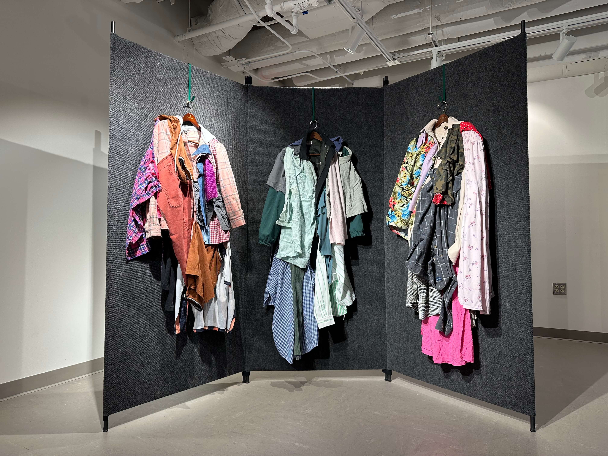
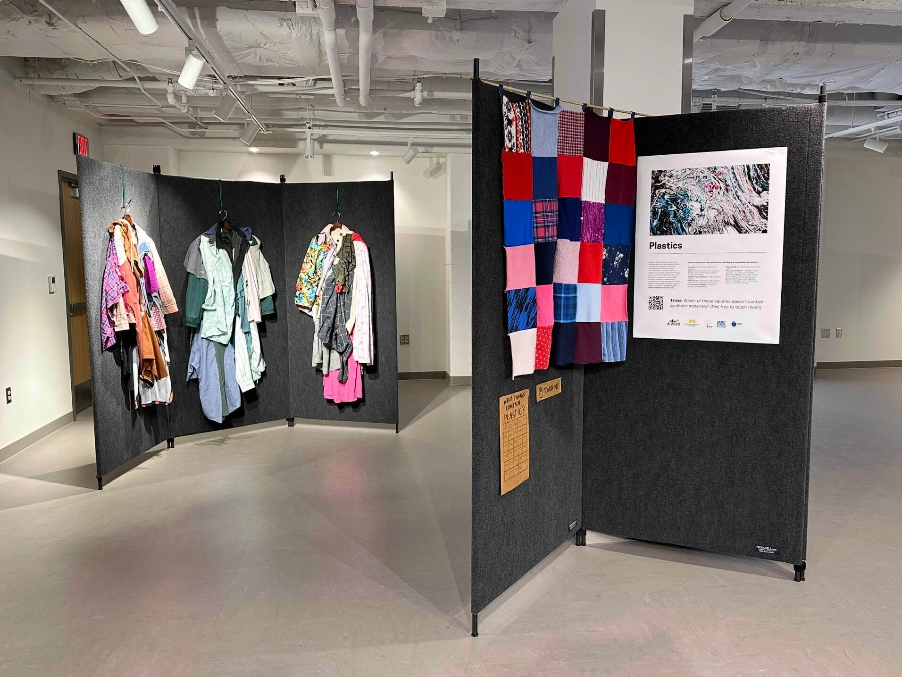

Too Much To Wear
(textile waste) was exhibited in the University of Michigan's Shapiro Gallery as part of ZeroWaste.Org's 2025 Zero Waste Week.
There are enormous costs hidden behind the clothes that we display in our closets and on our bodies. Through extraction of natural resources, pollution from manufacturing processes, reliance on plastic-based materials and unethical labor practices, and massive emissions from transporting textiles along their supply chain, fast fashion plays a big role in the climate crisis.

Fast fashion accounts for 10% of global emissions... and that’s before the clothes are marketed to us as trendy, overfill our closets, and then are discarded when we no longer want to wear what we have purchased. Once we get a sense of the damage that the production of clothes is doing to the planet, it becomes too much for us to wear.
Everything in this exhibit is constructed from textile waste sourced from thrift stores that deemed the items unsellable (to be "recycled", sold to "third world countries,” or sent to landfills ). The textiles and supporting research from ZeroWaste.Org, ECO-UM and the University of Michigan’s Planet Blue Student Leaders illustrate the hidden environmental costs behind fast fashion.